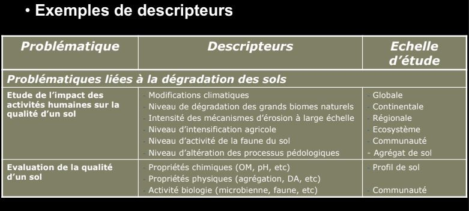
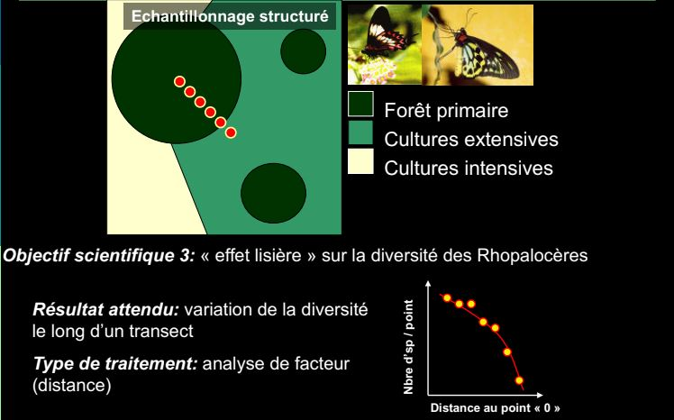

Bases fondamentales de l'échantillonnage
Flore = liste des espèces
Végétation = quantitatif, proportion d'espèces
Biais = erreur systématique
Un échantillonage est toujours construit pour répondre à une question, même si elle est formulée de manière non déclarative, doit -être rendue apparente, pour constuire l'outil permettant d'y répondre, le plan d'échantillonage.
Un plan d'échantillonage produit des données qui permettront de tester des hypothèses. Le plan doit - être adapté au type de question posée. En retour, la question doit être dimensionnée pour qu'il soit possible d'y répondre.
Nombre d'espèce = richesse
Plus on grandit les espaces, plus la richesse augmente. Les ecosystèmes changent donc la liste des espèces s'accélère. L'orsque l'on arrive à la frontière régionale, on est dans la biogéographie. Le nombre d'espèces augmente mais plus faiblement.
On aura des marches d'escaliers en fonction de l'échelle croissante.
I) Les généralités
L'objectif de l'échantillonage est de permettre d'inférer à partir des propriétés d'un ensemble d'échantillons, celle de la pop mère
Question méthodo: comment déterminer les caractéristiques d'un plan d'échantillonnage de façon à obtenir le maximum d'info pertinentes en fonction du pb posé.
Problème : Choisir une méthode et une stratégie d'utilisation de cette méthode permettant d'obtenir une représentation satisfaisante de l'objet étudié.
Domaine d'application: échantillonage de groupes d'animaux à caractère bio-indicateur.
II) Problématique générale
Prise en considération de la complexité extrême des systèmes bio
- Trop complexe pour être décrits dans leur ensemble
- Un échantillon de ces systèmes est souvent lui même très complexe
- Leur étude se limite à une image approximative, restreinte à un petit nombre de caractères ou descripteurs choisis en fonction d'une problématique précise
ex des milliers d'espèces dans certains ecosystèmes tropicaux, les insectes sont très variés
III) Définitions
Echantillon: Frangment d'un ensemble prelevé pour juger cet ensemble.
Descripteur : variable qualitative ou quantitative utilisée pour décrire un échantillon conformément aux préoccupations de l'étude
Echantillonage : action de collecte des échantillons
Plan d'échantillonage : ensemble de processus décisionnels qui aboutissent au plan d'échantillonage et à son amélioration en fonction des résultats.
IV) L'interférence statistique
Le plan d'échantillonage doit permettre l'interférence statistique
L'estimation des propriétés vraies de l'objet global
Importance du choix du descripteur
richesse spécique = nombre d'espèces présentes
On ne sait pas pour quel groupe l'échantillonage, le représentera le mieux.

La meilleure estimation va être trouvé si:
-
On évite le biais = info introduite non intentionnellement/ sans lien informatif avec la question dans les données lors de l'échantillonage et qui se retrouve en fin d'analyse
-
On parvient à réduire l'intervalle d'incertitude
Importance de la définition de la stratégie d'échantillonage
V) Les processus décisionnel

VI) Les échelles d'observation
Niveau d'organisation = Unité hierarchique formellement identifée et délimitée dans le temps et dans l'espace : échelle à laquelle des propriétés fonctionnelles émergent.
Echelle d'observation = domaine d'échelle choisi pour une étude donnée : échelle à laquelle on mesure
Ecosystème = niveau d'organisation mais l'échelle d'observation est difficile
Profil de sol = échelle d'observation


La réponse à une question peut vraiment dépendre de l'échelle à laquelle on la pose.
VII) Les descripteurs
Classification des descripteurs:
- Les decripteurs quantitatifs
- définis comme des quantités véritables unités de mesures numériques, permettant le calcul de rapports, moyennes, variance ect...
ex densité ou biomasse d'individu par taxon
- Les descripteurs qualitatifs
- Catégories ou modalités définies sans assignation de mesure
- pas d'ordre possible
- pas de calcul possible
ex présence/ absence d'un taxon dans une communauté
- Les descripteurs semi-qualitatifs
- Catégorie ou modalité par l'existence d'une relation d'ordre
- Pas de calculs possibles
ex classes de densité par taxon


VIII) Les méthodes
Très fortement contraintes par les objets d'étude :
- Par le comportement des espèces
- Par le milieu échantilloné
- Par la taille des espèces
Différents types de méthodes d'échantillonnage :
- Méthodes destructrices ( échantillonnage de sol, prélevement d'individus pour identification au laboratoire)
- Méthode non destructrices ( comptage, libération d'individus, observations visuelles)
IX) Les contraintes naturelles
Les contraintes naturelles
-
sont liés aux caractéristiques propres des descripteurs:
- répartition spatiale et temporelle
- distribution stat
-
dépendent des échelles d'observation
- à la structure de l'écosystème considéré
- à l'echelle d'observation choisie
X) Les contraintes
Les descripteurs ne sont généralement pas répartis de façon homogène dans l'espace
- problème d'autocorrélation spatiale et de l'indépendance stat des mesures
- forte contrainte sur une distance minimale entre mesures
- contrainte également sur l'emplacement des mesures
- cette contrainte est fonction de l'échelle d'observation
Les descripteurs ne sont pas répartis de façon homogène dans le temps
- forte contrainte sur le moment des mesures
- choix de la date maus aussi de la fréquence des mesures
- cette contrainte est également fonction de l'echelle d'observation
Les contraintes techniques
-
Liées à la nature des descripteurs
- méthode d'échantillonnage adaptée (macrofaune, édaphique, macrofaune dulçaquicole)
-
Liéees aux contraintes du cadre d'étude et de la méthode choisie
- pb de main d'oeuvre dispo
- pb de temps dispo
- pb de logistique
XI) Le plan d'échantillonnage
Plan d'échantillonnage aléatoire simple
- Avantage : le seul qui permet d'éviter les biais
- Problème : comment définit-on aléatoire
Plan d'échantillonnage structurés
- On introduit délibérément des informations en fonction d'une connaissance préalable, d'hypothèses de travail, d'une problématique, ect..
- On utilise alors un prémodèle, forme de description recherchée à priori en fonction de laquelle le plan d'échantillonnage est défini
La nature du prémodèle implique une idée préalable du traitement ultérieur des données

XII) Les objetcifs scientifiques et pratiques




XIII) Les indices de diversité
Diversité biologique = ensemble de toutes les formes de vie présentes sur notre planète, ainsi que des complexes écologiques auxquels elles appartiennent.
- Du gène, aux espèces et aux écosystèmes
- Groupes taxonomiques, groupes fonctionnels, groupe de réponse
- Peut etre mesurée à différentes échelles
- Peut être mesurée à l'aide d'une multitude d'indices
Ces indices sont des propriétés des communautés que l'on peut mesurer sur un échantillon donné Il rendent compte de différentes facettes de ce que l'on appelle la biodiversité
Diversité = une mesure qui intègre d'une manière ou d'une autre à la fois le nombre de catégories présentes et la répartition de leurs représentants dans la pop.
La rareté moyenne des catégories
On pourrait comparer sur un mode paramétrique les diversités si elles obéissent à des distributions similaires or :
Il n'existe pas de distribution universelle des abondances. On fait donc appel à des indices non paramétriques.
Les indices non paramétriques les plus employés sont:
-
richesse spécifique = nombre d'espèce (S)
- peut -être calculée comme le total des espèces trouvées dans une station donnée
- Ou comme le nombre moyen d'espèces par échantillon
-
indices de Shannon - Weaver = indice synthétique de mesure de la diversité spécifique
- équitabilité (evenness) = mesure de l'équirépartition des espèces au sein des effectifs
Exemple de calcul d'indices

XIV) Les groupes indicateurs
Les groupes indicateurs doit être:
-
groupe taxonomique ou écologique bien identifié
-
présence d'espèces sensibles à certaines perturbations
-
répartition géographique importante
-
connaissance taxonomique satisfaisante
-
échantillonnage standardisé
Un groupe ou taxon indicateur indique par sa présence une propriété de l'environnement. Cela invite à réfléchir au déterminisme de la présence ou absence d'une espèce dans un environnement : la niche écologique
A) Notion de niche écologique
Premier à utiliser ce terme Grinnell Chaque espèce ayant ses propres limites physiologiques, morphologiques et éthologiques, ce qui l'a rend capable d'occuper des espaces particuliers offerts par la nature
- La niche est une propriété de l'environnement, pas de l'espèce
- Le rôle central de l'exclusion compétitive est reconnu
Une espèce sera donc indicatrice d'une niche qu'elle est seul à occuper à l'équilibre
Elton insiste sur le rôle fonctionel de l'espèce dans un réseau trophique. Les conditions abiotiques ne sont pas prises en compte. Ce que fait l'espèce, pas ce qu'elle est
Odum: "L'habitat d'une espèce est son adresse, la niche est sa profession. Il ne s'agit plus d'un domaine de tolérance, ni d'une place dans un réseau trophique, mais d'un rôle au sein d'un réseau d'intéractions."
Intéraction directes mais aussi indirectes par modification de l'environnement physique impactant les autres espèces
Définition de Hutchinson
Généralisation de la notion d'habitat à l'"espace des facteurs". La niche, sensu Hutchinson, est le domaine de tolérance vis à vis des pricipaux facteurs.
On peut généraliser la notion de niche sensu Hutchinson à un grand nombre de facteurs m^me s'il est difficile de les visualiser. Au final, le domaine de recouvrement devient nul dès que sur l'un des facteurs il y a un non-recouvrement. Les limites de tolérance ne sont pas nécessairement géométriques:
Les limites de tolérance à deux ou pluseurs facteurs peuvent être corrélées
Pour Hutchinnson, la niche est une propriété de son occupant, pas de l'environnement. Elle peut évoluer avec lui.
Définition de Hutchinson : utile en termes de bioindication
Définition d'Elton: opératoire en termes d'analyse de flux d'énergie
Définition d'Odum: utile pour prévoir l'évolution du système difficile à mettre en oeuvre sur des systèmes complexes.
XIV) Les groupes - organismes indicateurs
Pour qu'un organisme puisse être considéré comme indicateur, il faut
- définir ce qu'il est censé indiquer
- contraindre par l'observation les champs d'indication
- choisir la fourchette dans laquelle il sera possible de l'utiliser
- s'il reste à choisir, il faudra privilégier les organismes répandus et autant que possible faciles à utiliser
Exemple : Les lichens et le bioindication de la pollution atmosphérique L'utilisation des lichens comme mesure de la pollution atmosphérique est (très )ancienne:
- Erasme Darwin (1790)
- Travaux sur les lichens du jardin du Luxembourg en 1866
- Les pricipales applications se sont portées, dans les années 50-90, sur le suivi des pollutions acides (SO2), largement réduites depuis.
Caracas : comparaison sur la base de la richesse spécifique
1970: "Golden Age": les lichens sont utilisés en tant que bioindicateurs de la pollution en SO2. Calibration de la résistance pour chaque espèce, puis relevés qualitatif.
Liste d'espèces construite sur la base des (quelques) données fournies. Par les capteurs de SO2 existant alors principalement en zone industrielle ou urbaine; validée par des transplantation : on plante des espèces estimées sensibles en zone polluée et on mesure leur durée de survie.
Puis la pollution en SO2 baisse grâce à l'usage des carburants raffinés, baisse de l'utilisation du charbon, désindustrialiastion : Les cartes ne changent pas comme elles le devraient. Certaines espèces ne reviennent pas, d'autres reviennent plus vite qu'espéré. C'est le concept du Zone Skipping
Explications:
- Leg de pollution (remobilisation)?
- Capacité de colonisation différentielle entre les espèces ?
- Interférence avec d'autres pollutions : Nitreuse
- Nouveaux lichens de zones polluées : plus nitratophiles
La bioindication de la pollution atmosphérique est aussi sensible à lla cinétique et au sens du changement
Utilisation actuelle des lichens pour la pollution azotée aux Pays-BaS
1) Définition d'un champ d'échantillonnage : les dépôts azotés faisant varier le pH, ne considérent que des écorces d'arbres dans la même fourchette de pH
2) Construction d'un indicateur composite avec des espèces communes (20 espèces choisies)
3) Comparaison des donées de l'indicateur composite avec des données isues de capteurs
4) Validation par mesure de corrélation
Seule espèce considérée : Quercus robur, à écorce acide
Carte des zones trouvées par le calcul de l'indice Nitrofiele Indicatie Waarde
Regeression linéaire à l'échelle des sites (174 et 145)
Régression linéaire à l'échelle des mailles de 5x5 km
Bilan Bioindiaction:
Choix des groupes : doit-être documenté
Choix des écehelles : doit -être dimensionné au domaine des espèces
Pas de bioindicateur universel : Prise en compte des groupes
Problème de la réactivité temporelle : doit-être également mesuré
Garder à l'esprit de la dimension de la niche que l'on considère